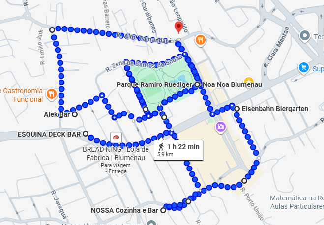

Blumenau 6K
1 km • 1 pub • 1 pint
O percurso total tem 6 km. A cada quilômetro percorrido (com uma tolerância de ±100 metros), faremos uma parada estratégica em um pub para reabastecer com 1 pint de chope.

1 km • 1 pub • 1 pint
O percurso total tem 6 km. A cada quilômetro percorrido (com uma tolerância de ±100 metros), faremos uma parada estratégica em um pub para reabastecer com 1 pint de chope.